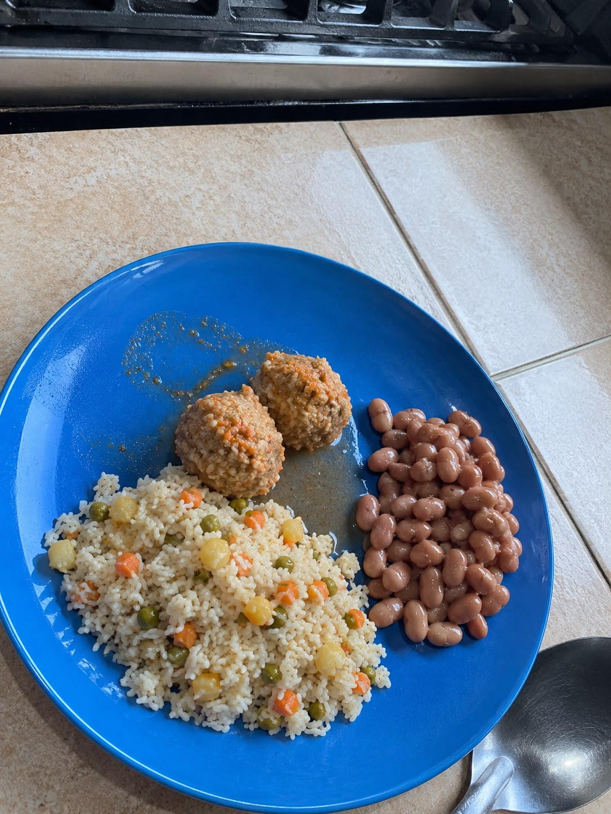
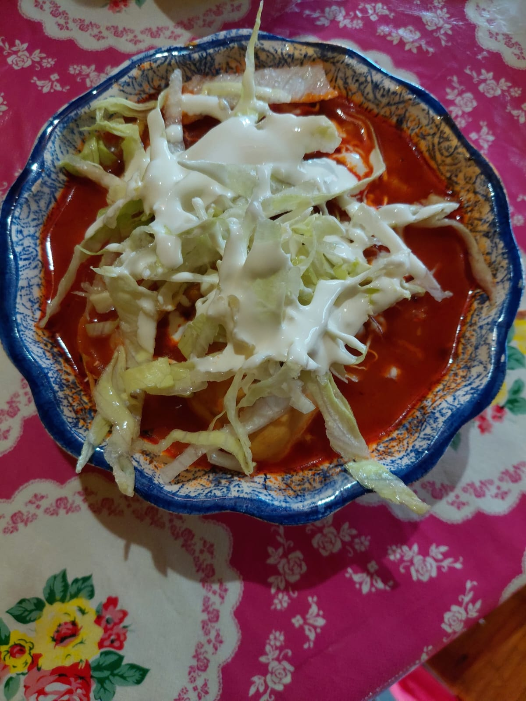

PLATILLO 1
"La Gastronomía es tradición servida en cada platillo."

PLATILLO 2
"La cocina es el arte de transformar ingredientes en recuerdos."

PLATILLO 3
"Cada platillo cuenta una historia de tradición y cultura."

PLATILLO 4
"La Gastronomía une culturas a través de sus sabores."

PLATILLO 5
"Cocinar es mantener viva la tradición."

PLATILLO 6
"Cada sabor lleva consigo una parte de nuestra historia."

PLATILLO 7
"La comida es cultura que se disfruta con los sentidos."

PLATILLO 8
"La gastronomía representa nuestras raíces en cada bocado."

PLATILLO 9
"Los sabores son recuerdos que nunca se olvidan."

PLATILLO 10
"Cada receta es un legado que pasa de generación en genaración."

PLATILLO 11
"La cocina es tradición, creatividad y pasión."

PLATILLO 12
"Cada ingrediente guarda un pedacito de nuestra cultura."

PLATILLO 13
"La Gastronomía convierte la tradición en una experiencia."

PLATILLO 14
"Un platillo puede contar más que mil palabras."

PLATILLO 15
"Cocinar es preservar nuestras raíces con amor."

PLATILLO 16
"La comida refleja la identidad de un pueblo."

PLATILLO 17
"Cada receta lleva el corazón de quien la prepara."

PLATILLO 18
"La gastronomía es cultura que se puede saborear."

PLATILLO 19
"Los sabores tradicionales mantienen viva nuestra historia."

PLATILLO 20
"La cocina es un puente entre generaciones."
PLATILLO 21
"La grastronomía transforma ingredientes en emociones."

PLATILLO 22
"Cada bocado nos acerca a nustras raíces."

PLATILLO 23
"Los sabores de nuestra tierra forman parte de quienes somos."

PLATILLO 24
"La tradición encuentra su mejor expresión en la cocina."

PLATILLO 25
"La Gastronomía celebra la diversidad de nuestros pueblos."

PLATILLO 26
"Cada receta es un recuerdo convertido en sabor."

PLATILLO 27
"Cocinar es contar historias sin necesidad de palabras."

PLATILLO 28
"La comida tradicional es patrimonio servido en un plato."

PLATILLO 29
"La gastronomía guarda en sus sabores la esencia de un pueblo."

PLATILLO 30
"Cada platillo representa años de cultura y tradición."

PLATILLO 31
"Los ingredientes de nuestra tierra cuentan nuestra historia."

PLATILLO 32
"La cocina mantiene encendida la llama de nuestras tradiciones."

PLATILLO 33
"La grastronomía es la identidad, tradicíon y sabor de un lugar."

PLATILLO 34
"Cada platillo es una ventana hacia nuestra cultura."

PLATILLO 35
"Los sabores de ayer inspiran la cocina de hoy."

PLATILLO 36
"La gastronomía es tradición que nunca deja de evolucionar."